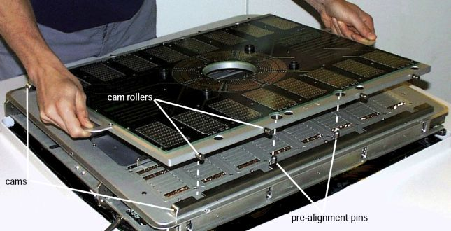

DUT docking for Direct-Probe
DUT docking is used to connect a DUT board to the tester. This is done by fixing the DUT board stiffener to the DUT interface and pressing the pogo pins to the contact pads of the DUT board.
There are stiffener detect sensors to prevent DUT docking to avoid damages of the docking mechanism, when the DUT board is not in the right position.
Usage
You must ensure that
- the docking cylinders are fixed (if hard docking is required)
- the DUT board is firmly seated on the DUT interface.
- Two switches detect the stiffener position.
- If stiffener detect is not active, DUT docking is prevented.Note In case of an emergency, you may un-dock the DUT board manually by accessing the according valve directly. No electricity is necessary, but compressed air must be available.
The DUT docking interface can only be used with the remote control:
- To dock the DUT board, press DUT-Dock.
- To un-dock the DUT board, first press Enable, then
DUT-Undock.

Protective mechanism
You cannot dock the DUT board when no stiffener is detected.
Check the SD LED for the actual status:
Status |
Description |
|---|---|
On |
Stiffener is in the right position |
Flashing |
Stiffener is in a bad position. Note If the stiffener is in the right position, check the cabling and micro
switches.
|
Off |
No stiffener at DUT interface |
You cannot move the test head in vertical direction using the manipulator motor as long as the hard-docking cylinders are fixed. Press the override button to move the test head vertically.
In case of a disconnected hard docking sensor, the locking mechanism is always active.
Functional changes
- Introduced in SmarTest 6.5.4